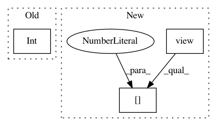

371ffe8f69e9f76978dd4254534285129f0f3d6c,examples/common.py,,distribution_accuracy,#Any#Any#,68
Before Change
tiled_a = a
tiled_a = tf.reshape(tiled_a, [int(tiled_a.get_shape()[0]), 1, int(tiled_a.get_shape()[1])])
tiled_a = tf.tile(tiled_a, [1, int(tiled_a.get_shape()[0]), 1])
tiled_b = b
tiled_b = tf.reshape(tiled_b, [1, int(tiled_b.get_shape()[0]), int(tiled_b.get_shape()[1])])
After Change
This works best on a large batch of small inputs.
shape = a.shape
tiled_a = a.view(shape[0], 1, shape[1]).repeat(1, shape[0], 1)
tiled_b = b.view(1, shape[0], shape[1]).repeat(shape[0], 1, 1)
difference = torch.abs(tiled_a-tiled_b)
difference = torch.min(difference, dim=1)[0]
difference = torch.sum(difference, dim=1)
return torch.sum(difference, dim=0)
def batch_accuracy(a, b):
In pattern: SUPERPATTERN
Frequency: 3
Non-data size: 3
Instances
Project Name: HyperGAN/HyperGAN
Commit Name: 371ffe8f69e9f76978dd4254534285129f0f3d6c
Time: 2020-06-22
Author: martyn@255bits.com
File Name: examples/common.py
Class Name:
Method Name: distribution_accuracy
Project Name: pytorch/fairseq
Commit Name: 9012e87d36a5f88cc3894508688d4328bbfd3abe
Time: 2019-08-02
Author: dnn@fb.com
File Name: fairseq/modules/sinusoidal_positional_embedding.py
Class Name: SinusoidalPositionalEmbedding
Method Name: forward